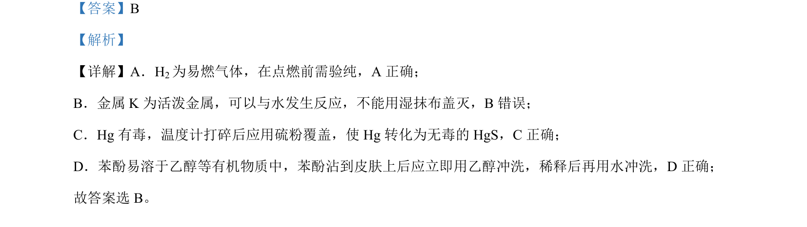

考点：化学实验安全 物质性质与处理
化学实验安全操作，判断关于易燃气体、活泼金属、有毒物质和苯酚处理的正确做法

📄 原 PDF 第 2 页：
素材/真题/吉林/2008-2024·（吉林）化学高考真题/2024年高考化学试卷（辽宁）（解析卷）.pdf
【答案】B 【解析】 【详解】A．H2为易燃气体，在点燃前需验纯，A 正确； B．金属 K 为活泼金属，可以与水发生反应，不能用湿抹布盖灭，B错误； C．Hg 有毒，温度计打碎后应用硫粉覆盖，使 Hg 转化为无毒的 HgS，C正确； D．苯酚易溶于乙醇等有机物质中，苯酚沾到皮肤上后应立即用乙醇冲洗，稀释后再用水冲洗，D 正确； 故答案选 B。